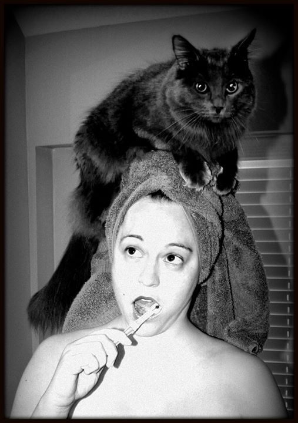

“Quando compartilhamos nossas batalhas, outras pessoas reconhecem que podem compartilhar as suas. E, de repente, percebemos que as coisas que nos envergonhavam são as mesmas que todo mundo enfrenta uma hora ou outra. Estamos muito menos sós do que pensamos.”
Sobre:
Jenny Lawson é autora best seller do The New York Times criadora do The Bloggess, um blog que fala sobre seu dia a dia, maternidade, sua paixão por taxidermia e seus distúrbios mentais, Jenny tem transtorno de ansiedade, depressão, síndrome do pânico e tricotilomania, foi a partir desse blog que ela se tornou amplamente conhecida. Ela nasceu em Austin, Texas, teve uma infância insana e conta sobre os sentimentos de ansiedade que pela família era chamada de “frio na barriga” em um de seus livros. Também fala sobre sua juventude, suas tentativas de ‘fuga’, por meio de drogas e bebidas e como era vista como uma jovem esquisita, e a dificuldade de se relacionar por ter ansiedade ou fobia social.

Em 2010, após receber de seu marido a notícia de que um amigo havia morrido, Jenny decidiu que não iria se permitir ter mais uma crise fortíssima de depressão, se ela podia sentir as dores e tristezas com tanta intensidade, definitivamente poderia também ser muito, extremamente feliz só de raiva! Em seu blog, começou a falar abertamente sobre sua rotina e seus gatilhos diários, e com a hashtag #FURIOUSLYHAPPY foi um dos assuntos mais comentados do twitter.
O número de pessoas que vivem com depressão, segundo a OMS, está aumentando – 18% entre 2005 e 2015. A estimativa é que, atualmente, mais de 300 milhões de pessoas de todas as idades sofram com a doença em todo o mundo. O órgão alertou ainda que a depressão figura como a principal causa de incapacidade laboral no planeta.
“Todo transtorno mental é diferente, porque toda pessoa é diferente. Não existem curas fáceis, mas há muitas ferramentas disponíveis agora que as pessoas finalmente estão começando a falar sobre o assunto.(...) É por isso que você precisa contar com amigos, familiares e estranhos para lhe dar uma mão quando não consegue fazer o que precisa ser feito. (...) Não é sua culpa se o medicamento ou terapia que indicaram para tratar seu transtorno mental não funciona perfeitamente ou se funcionou por um tempo e depois parou de funcionar. Você não é um problema de matemática, você é uma pessoa. (...) porém acredito que existe um tratamento para cada um que se der o tempo e a paciência necessários para encontra-lo.”
Jenny Lawson é um exemplo de força e de luta, de que é possível viver feliz em meio dos transtornos mentais, ela incentiva o tratamento com especialista, ela mostra que ninguém é um alien, ou talvez seja, e que se falarmos sobre isso, podemos ter uma vida de qualidade, feliz, evitando muitos finais tristes dessa doença.
"“Espero um dia ver um mar de pessoas usando fitas prateadas como sinal de que compreendem a batalha secreta, como uma celebração das vitórias alcançadas a cada dia à medida que, individualmente, conseguimos sair das nossas trincheiras para ver nossas cicatrizes sararem e para nos lembrarmos de como é o sol. Espero um dia melhorar, e tenho certeza que vou conseguir. Espero um dia viver num mundo em que a luta particular pela estabilidade mental seja vista com orgulho e torcida pública em vez de vergonha. (…) Eu sobrevivi e faço questão de lembrar que, a cada vez que passamos por isso, ficamos um pouco mais fortes. Aprendemos novos truques no campo de batalha. Eles são aprendidos de formas terríveis, mas são úteis. Não lutamos em vão. Nós vencemos. Estamos vivos.”
Jenny foi a minha motivação pra reaprender a viver, há alguns anos vivo com transtorno de ansiedade e depressão, e quando li seus livros descobri que não estou só e por fim, decidi, ser ALUCINADAMENTE FELIZ SÓ DE RAIVA!
Você precisa de uma forcinha da Jenny hoje?
"Para todos que atravessam o vale da escuridão, mas também para aqueles que caminham sob a luz do sol porém estendem a mão para a escuridão e nos acompanham:
Dias mais iluminados estão vindo aí. Uma vista mais clara vai chegar. E você vai chegar também.
Não, talvez não dure para sempre. Os momentos de luz podem durar só alguns dias de cada vez, mas aguente firme até lá. Esses dias compensam a escuridão.
Na escuridão você encontra a si próprio, passa a ser apenas ossos e exaustão e fragilidade. Na escuridão você encontra seu eu mais primário. (...)Você verá coisas qye nenhuma pessoa normal verá. Coisas terríveis. Coisas misteriosas. Coisas que tentam se infiltrar no seu cérebro como uma semente de erva daninha. (...) Que gritam mentiras. Que querem que você morra.(...) Essas coisas são monstros amedrontadores.(...) Você sabe que esses seres não são reais, mas, quando se está no buraco negro e lamacento com eles, são as coisas mais reais que existem. E eles nos querem mortos.
E, às vezes, eles conseguem.
Mas nem sempre. E não com você. Você está vivo!. Você já enfrentou e lutou contra eles. Você está assustado, cansado, e até mesmo exausto, e talvez tenha chegado a desistir. No entanto, não desistiu. Você já venceu muitas batalhas.(...)
...no breu cego das profundezas, tem certeza que está só. Mas não está. Estou com você. E não sou só eu. Algumas das melhores pessoas estão aqui também... sentindo-se cegas. Esperando. Chorando. Sobrevivendo. Distendendo dolorosamente seus espíritos para poderem aprender a respirar de baixo d'água... para fazerem o que os monstros dizem ser impossível: viver. E para, enfim, conseguirem encontrar o caminho de volta a superfície com o conhecimento do que a noite pode trazer. Para se secarem sob a luz quente que brilha tão forte e com tanta facilidade para quem vive na superfície. (...) mas com olhos diferentes... olhos que ainda veem as pessoas submersas, que permitem que estendam o braço para a escuridão e puxem outros combatentes, ou que simplesmente segurem suas mãos geladas e se sentem às margens da água para esperar pacientemente que subam para respirar.
(...)nós vivemos em andares negativos com tanta frequência que começamos a compreender que, quando o sol brilha, a vida deve ser vivida a toda velocidade, ao máximo.
(...)Às vezes, caminhamos sob a luz do sol junto com todo mundo. Às vezes, vivemos debaixo d'àgua, lutamos e crescemos. E às vezes...